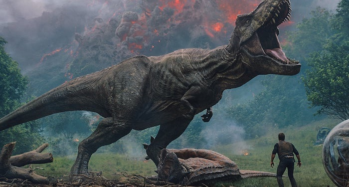

Jurassic World: Fallen Kingdom
Plot Synopsis
Six months after the demise of the Jurassic World theme park on Isla Nublar, a group of mercenaries are sent to Isla Nublar to recover the bones of the Indominus Rex from the Jurassic World lagoon for the creation of a new genetically modified hybrid: the Indoraptor. A submersible is sent down to retrieve the bones, and it sends them up on a buoy before it is attacked by the Mosasaurus. The people on land who opened the gate to the lagoon lose contact with the submarine pilots. The gate starts to close and a Dilophosaurus can be heard running away in the jungle. The trees nearby shake and Jurassic World's veteran Tyrannosaurus Rex attacks the group. Jack is left on the ground and their helicopter lets down a rope ladder. They escape the Tyrannosaurus, but Jack is then swallowed by the Mosasaurus after it jumps into the air and it escapes from its enclosure.
It then cuts to the mainland, in the year 2018, where Claire Dearing, the former park manager, has now founded the Dinosaur Protection Group, an organization dedicated to saving and protecting the dinosaurs. After the government refuses to fund a rescue operation to save the dinosaurs, alongside Ian Malcolm, Claire meets Benjamin Lockwood, an old business partner of John Hammond, who agrees to fund the rescue mission and bring the dinosaurs to a new sanctuary island where they will be left to live on their own, safe from human interference. Lockwood's assistant, Eli Mills, asks Claire to recruit Owen Grady, a former raptor trainer who worked at the park, to find and capture Blue, the last surviving Velociraptor. Claire recruits Owen to help her rescue the remaining dinosaurs from the island.
Claire and Owen then set off on a charter plane with Zia Rodriguez, a paleo-veterinarian, and Franklin Webb, an IT expert, both from the Dinosaur Protection Group. Once their plane lands, the group is surprised to find a large base camp has already been set up, and they are met by Ken Wheatley, a big game and trophy hunter. They all set off along with a group of mercenaries to reactivate an abandoned radio communications tower that they will use to find the dinosaurs via their RFID chip implants. Along the way while passing through the Jurassic World main street, they encounter a Brachiosaurus.
Owen, Zia, Wheatley and some of the mercenaries go to find Blue. Owen suggests that he set out on his own to find Blue, and the others stay behind at the truck. When Owen comes upon the fallen Explorer 04 near the old Tyrannosaur Paddock from the first Jurassic Park, Blue jumps out and Owen tries to bond with her before she is tranquilized by Wheatley and his mercenaries. Angry, Blue tackles a mercenary and kills him but not before drawing his sidearm and shooting her, much to Wheatley's and Owen's dismay. Owen tries to attack Wheatley but Wheatley tranquilizes him and threatens to shoot Zia. Zia says that she is the only one who can keep Blue alive and Wheatley has his men put their weapons down.
Mt. Sibo erupts, causing the mercenaries protecting Claire and Franklin to panic and drive off, locking them inside the old communications center. A Baryonyx surprises them by crawling through an old tunnel, but is temporarily held at bay by falling lava. Franklin and Claire narrowly escape through an emergency ladder and lock the Baryonyx inside the communications center. Owen awakes from his unconsciousness, but is still mostly immobile. He is surprised by a Sinoceratops, which plays with him for a little while before getting scared off and running away from the approaching lava which crawls toward Owen but he manages to (barely) escape just before he is engulfed by the lava. He runs into Claire and Franklin and yells at them repeatedly to "Run", the three elude the lava and falling debris and magma bombs, while avoiding getting trampled by the stampeding dinosaurs.
Franklin and Claire both hide inside a Gyrosphere, when a Carnotaurus appears and fights a Sinoceratops, before being pinned down and killed by the T. Rex who also makes a run for it. Franklin, Claire, and Owen make a run from the burning ash, Owen is slowed down a bit by the ash, but Claire and Franklin fall off the edge with several other dinosaurs. The magma bombs break the Gyrosphere, and Claire and Franklin almost drown, but are able to survive when Owen opens one of the doors using his survival knife. Crawling up on the beach, they see several of the dinosaurs, such as the Baryonyx and T. Rex all being captured, The mercenaries on the ship called the Arcadia begin caging all of the captured dinosaurs, Wheatley takes a pair of pliers and yanks a tooth out of a tranquilized Stegosaurus, Owen, Claire, and Franklin also see Blue being tended to by Zia who has been captured,then the three use a truck to drive on the ship, which is leaving the island, they only barely make it, and watch the island burn up in the background. A trapped Brachiosaurus calls out to the departing ship before being engulfed by the ash and perishing.
Eli is disappointed by the lack of progress, and meets with Gunnar Eversol, an auctioneer who plans to sell the dinosaurs with for money. Lockwood's apparent granddaughter Maisie overhears their conversation and learns of their plan. Eli takes Gunnar to a lab, where he reveals that they are creating a new dinosaur with Indominus Rex, mourn Smurfette, and Velociraptor called the Indoraptor, and potentially other improvements in its wake for the sake of military interests and warfare. With the current one being a prototype, and their plan to use it for militaristic purposes. Maisie attempts to tell Benjamin, but he seemingly believes she misheard them and sends her off to bed.
Owen, Claire, and Franklin meet up with Zia, who believes they need Blue for something; Zia further tells them that before she can treat Blue's gunshot wound, she needs a ready blood transfusion for Blue just in case. Unfortunately (much to Claire's charging), the only blood match on the ship would belong to a tranquilized T. Rex on board and inside one of the transport trucks, and so Zia sends both Owen and Claire to retrieve some of the live dinosaur's blood. They find the Tyrannosaur and successfully get her blood but are locked in by some of the guards as the T. Rex wakes up. As the agitated animal begins to freak out and thrash violently, Claire escapes through the top and opens the main doors of the cage; Owen narrowly escapes the T. Rex's snapping jaws before she can bite him in half. The crew gives the blood to Blue before they make a dash; unfortunately, Franklin is caught and mistaken for a mercenary, and is forced to help transfer the dinosaurs to Lockwood Manor. Owen and Claire sneak into a truck, but are discovered by Wheatley and imprisoned in the basement of Lockwood Manor.
Maisie, having observed Mills entering the entrance code for the mansion's elevator the previous day, secretly enters the laboratory and watches several clips of Owen training the Velociraptors on Isla Nublar. Her exploration is interrupted by Mills and Dr. Henry Wu; the latter is extremely stressed about Blue's condition. Maisie, in an attempt to escape the two men, backs into a corridor and encounters the caged Indoraptor, who reaches out and gently strokes her hair from behind. Maisie screams, alerting the attention of Mills, who angrily escorts her upstairs and locks her in her bedroom.
Lockwood confronts Mills about the latter's true intention of selling the dinosaurs in an auction, angered that Mills has crossed him and used his own mansion as the auction's venue. Ordered by Lockwood to call the police himself, Mills instead murders Lockwood by smothering him with a pillow.
Bidders soon arrive for a dinosaur auction and place their bids on various species of dinosaurs captured by the team on the island, including an Ankylosaurus, a juvenile Allosaurus, a Baryonyx, and multiple others. After being captured by Wheatley, Owen attracts the attention of a Stygimoloch, causing her to break through the wall and eventually break through the doors of Owen and Claire's cell allowing them to escape. Meanwhile in the auction room of Lockwood's estate, Eversol and Mills show the crowd the prototype Indoraptor, emphasizing that the animal is not for sale. Amazed by the creature's ability to lock onto a specific target (courtesy of a laser and an acoustic signal on a gun), the attendees begin to bid on the Indoraptor. Eversol is coaxed by Mills to accept bids, much to Wu's disdain as the prototype Indoraptor lacks Blue's genome - and thus can neither empathize nor follow more specific orders.
Owen and Claire encounter Maisie, who has escaped her room and discovered her dead grandfather, and the three enter the auction room as the Indoraptor is being displayed. Understanding that the Indoraptor is far too dangerous to be sold, Owen disrupts the auction's proceedings with the aid of the Stygimoloch and wreaks havoc among the spectators, causing Mills and Eversol to end the auction. Owen bests several mercenaries in hand-to-hand combat, then reverses a switch which prevents the Indoraptor's cage from exiting the auction room.
Later in the evening, Wheatley enters the deserted auction room and notices the Indoraptor. Having never seen the creature before and wanting one of its teeth for his necklace, Wheatley shoots the Indoraptor with two tranquilizer darts and enters the cage after the Indoraptor appears to be sedated. In reality, the Indoraptor is unaffected by the tranquilizer darts; he smiles and distracts Wheatley by waving his tail in the air before severing Wheatley's right arm and devouring him, his death is witnessed by Eversol who makes a dash for the elevator (without being spotted by the hybrid), where all the other executives were hiding, but pushes a woman out of the way so he can access the code to close the elevator, causing her to scream at the sight of the Indoraptor, who rushes at the still open elevator but the doors successfully close before the Indoraptor can reach them; however, the hybrid (either with intent or by chance) uses its tail to cut off the power supply to the auction room, which automatically reopens the elevator door. The Indoraptor then proceeds to maul Eversol and the other executives to death.
Owen reunites with Claire and Maisie and the three encounter Mills and two security guards in the mansion's basement. After unsuccessfully trying to coax Maisie to come with him, Mills angrily and cruelly reveals that Maisie is actually a clone of Lockwood's beloved daughter who had perished in a car accident many years prior. As Owen, Claire and Maisie process this revelation, the Indoraptor suddenly appears and kills the two security guards, prompting the others to flee.
Meanwhile, Zia and Franklin continue to tend to Blue in Wu's laboratory. Zia reveals to Wu that she had given Blue a transfusion of T. Rex blood, infuriating Wu, as it would now be impossible to create an Indoraptor with Blue's pure but now apparently T. Rex blood-tainted genome. Franklin injects 20 cc's of Carfentanil into Wu's neck, incapacitating him, before the two are apprehended by a pair of gunmen. Franklin frees Zia from being cuffed to Blue's cage, and Zia frees Blue. As Zia and Franklin flee to safety, Blue kills the two gunmen and escapes the laboratory before a massive explosion occurs - the brief battle had caused damage to several tanks of hydrogen gas within the laboratory.
Owen, Claire and Maisie take refuge on the main floor of Lockwood's mansion, in the skeleton and replica display room. They notice a human corpse on the ground near a Agujaceratops skull; as they approach it, the Indoraptor reveals himself and pulls the corpse farther behind the skull. The three protagonists take refuge against one of the walls of the skull's casing, but the Indoraptor successfully locates their vantage point by tracking their scent and climbing on top of the Agujaceratops skull. The Indoraptor chases Owen, Claire and Maisie up a spiraling staircase before the three escape into a power supply room, where Owen turns off the entire mansion's power.
Zia and Franklin discover a hydrogen cyanide leak near the laboratory, which will kill all of the dinosaurs if it spreads to the encaging area. Franklin resets the control system in order to restore power to the mansion. At this time, Owen, Claire and Maisie are hiding behind a diorama of a Velociraptor and Dilophosaurus engaged in battle near a glass wall. Maisie soon realizes that she is staring into the face of the Indoraptor through the glass wall and shrieks in terror; the Indoraptor breaks the wall and pursues the group once again, injuring Claire's leg with his toe claw in the process. The Indoraptor chases Maisie up another staircase and down a hallway until Maisie escapes up to her bedroom, where she takes refuge in her bed.
Owen is urged to take care of Maisie by the injured Claire; the two share a passionate kiss before Owen leaves to search for Maisie. The Indoraptor, who by this point has ascended to the mansion's roof, lets out a demonic screech and descends the building until he reaches the windows leading to Maisie's room. Hanging upside down, the Indoraptor opens one of the windows and enters Maisie's room, slowly approaching her bed as she begins to shiver and cry. Just before the villainous hybrid attacks, Owen enters Maisie's bedroom and shoots the Indoraptor multiple times with live ammunition. The Indoraptor is unaffected, and stands back up to face Owen. Blue enters Maisie's bedroom and confronts the Indoraptor; the two begin a vicious fight as Owen and Maisie escape the bedroom.
The Indoraptor fends off Blue and traps Owen and Maisie on the glass roof of the display room. Just before the Indoraptor pounces, Claire appears and coaxes him into attacking Owen with the laser and acoustic signal on the same gun used in the auction demonstration. The Indoraptor charges towards Owen and falls through the glass roof; however, he manages to grab ahold of a rafter connecting the glass panes together and pulls himself back atop the roof. Blue suddenly appears and jumps onto the Indoraptor, causing both to fall down into the display room. The Indoraptor falls directly onto the horns of the Agujaceratops skull, which impales and kills him, while Blue lands on top of the hybrid's corpse and escapes. Franklin and Zia enter and reunite with Owen, Claire and Maisie, and the five protagonists escape the battleground.
However, a new issue looms; the dinosaurs are trapped in a room that is flooded by noxious hydrogen cyanide. Claire releases all of the dinosaurs' cages one by one. Claire puts her hand on the red button that would release all of them from the entire building, but Owen discourages Claire to do so, thus making Claire resist because she does not want the dinosaurs to destroy the world. However, Maisie pushes the button anyway, releasing the captive dinosaurs, allowing them to escape to the mainland, exclaiming, "They're alive, like me."
As Mills is about to put the Indominus Rex fragment into the car, a stampede sound can be heard. As one of the men goes to investigate, a Pteranodon snatches and drops him onto Mills' car, killing him. The now free dinosaurs begin to stampede out of the mansion, trampling another guard to death. Mills immediately takes refuge under the car, which is quickly trampled and destroyed in the stampede. As Mills gets up from underneath his wrecked car and tries to pick up the I. Rex fragment, the T. Rex suddenly appears and snatches him in her jaws, brutally shredding him before tearing him in half with a Carnotaurus, and ultimately devouring Mills, the T. Rex then knocks over the Carnotaurus with her head scaring it off in the process. The T. Rex triumphantly roars and walks away, destroying the I. Rex fragment in the process and ensuring that no carnivorous hybrid can ever wreak havoc upon the world again. Owen, Claire, Franklin, Zia, and Maisie all exit through the entrance of the Lockwood Manor, where Blue reunites with Owen, and even touches Owen's hand. Owen instructs for Blue to accompany him; however, Blue denies him, as she would rather run free on her own than be kept in a cage again.
Ian sums up his speech, as a sequence of shots are displayed such as the Mosasaurus attacking surfers, the T. Rex roaring at a lion in a zoo, Owen, Claire and Maisie are seen driving down the highway to an unknown destination, and Blue is shown running and jumping onto a cliff overlooking a suburban neighbourhood below, signifying that dinosaurs and humans must now co-exist with one another, and calls out four times, into the sunset.
In a post-credits scene, three Pteranodons fly around and ultimately settle down on the Eiffel Tower replica in Las Vegas.